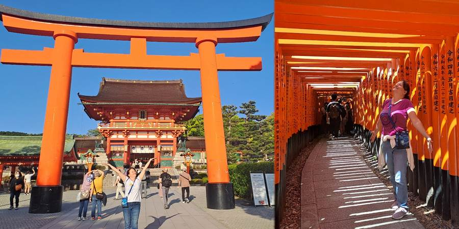
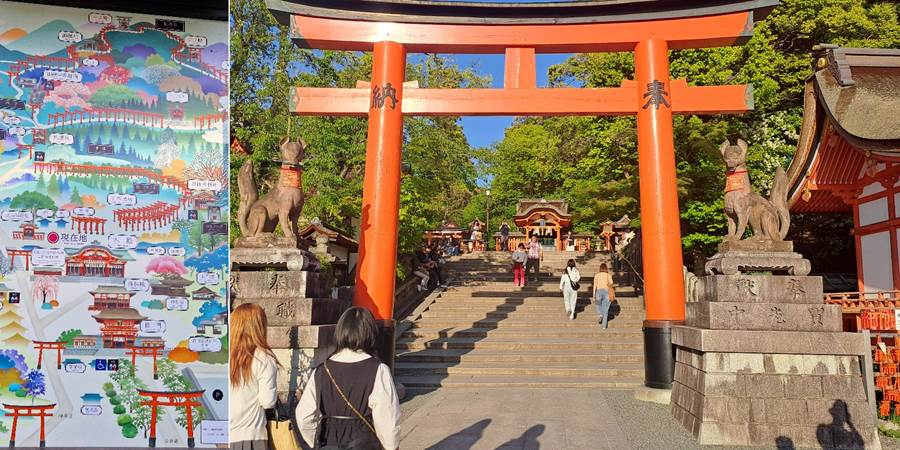
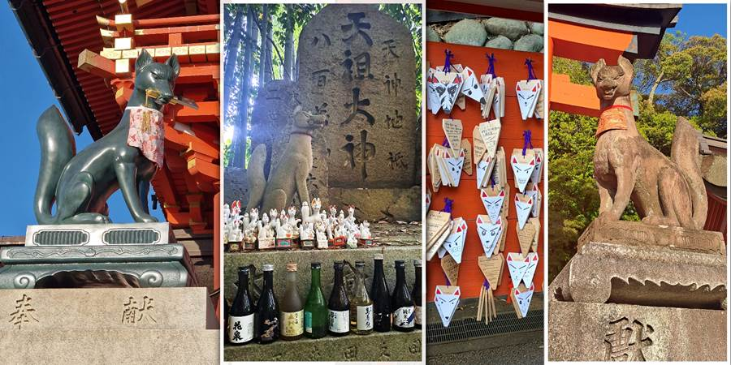
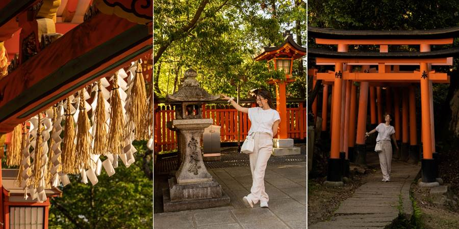
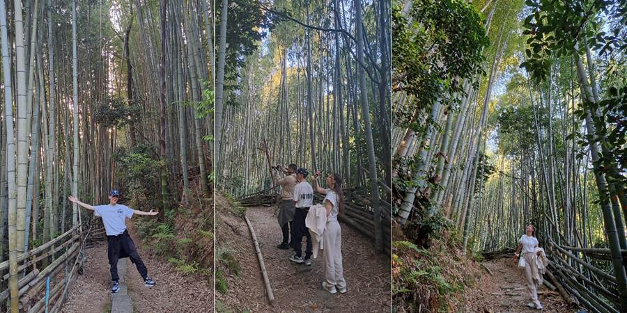
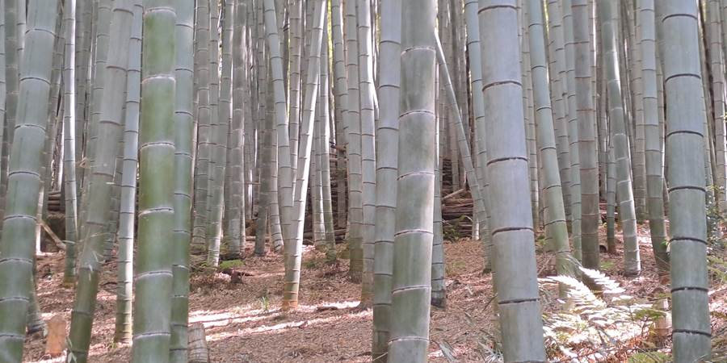
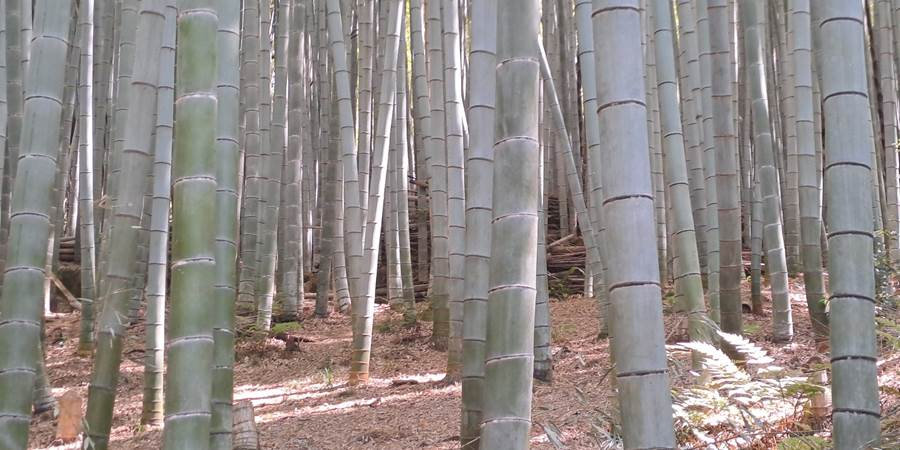

Dan osmi: Bambusova šuma i šuma crvenih kapija
Odlučili smo da odemo do Fushimi Inari shrine, hrama sa puno crvenih kapija, posvećenog lisici.
   Bilo je sveta ali ne prestrašno jer je već bilo predveče. Lepo je.
Obučila sam se na instagramu da kad skreneš sa puta, odmah iza ćoška je bambusova šuma u kojoj nije gužva, za razliku od one šume atrakcije. Bili smo sami u njoj.
 

Čak smo bili počašćeni da je pručakao vetar pa smo čuli i čuveni, zaštićeni, čuj, zaštićeni! zvuk šuštanja bambusovog lišća i kloparanje stabala.
Magično. Šušti, šušti bambusov list je uspavanka koju sam pevala deci. Da sam tada znala da ćemo ga zajedno, uživo čuti u Japanu!
Do ovde je bilo dve stanice vozom. Može se od nas i za oko 20 minuta peške.
Nazad taksijem, jer su deca preumorna (ustali u 4:30, a gnjavili do 2 ujutru, nisu legli da spavaju).
Dok sam otišla da kupim nešto za jelo, ulicama naše favele, gde me počastio i zalazak sunca (u pola sedam), i vratila se, deca pozaspala.
Ne propustite sledeću avanturu!
Kad Sandra krene u novi kraj sveta, vaš inbox prvi sazna. Prijavite se i stižu vam sve nove priče mejlom.